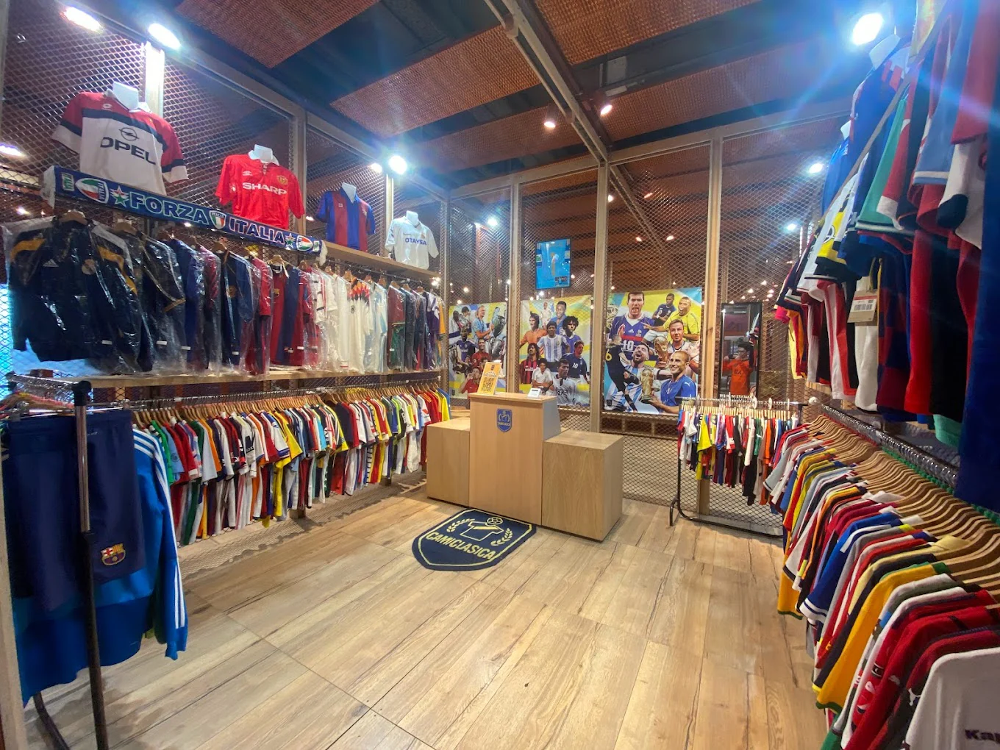

Nuestra Historia

El Templo del Fútbol nació en el corazón de una galería porteña, fundado por un grupo de coleccionistas y apasionados por la historia del deporte más popular del mundo. No somos solo una tienda; somos un museo viviente dedicado a preservar y compartir la magia de las camisetas que definieron épocas.
Nuestra misión es ofrecer a los hinchas y coleccionistas piezas únicas y de alta calidad, desde las joyas retro de los mundiales hasta los modelos más emblemáticos de los grandes clubes. Cada camiseta en nuestra colección tiene una historia que contar, y nosotros estamos aquí para contártela.